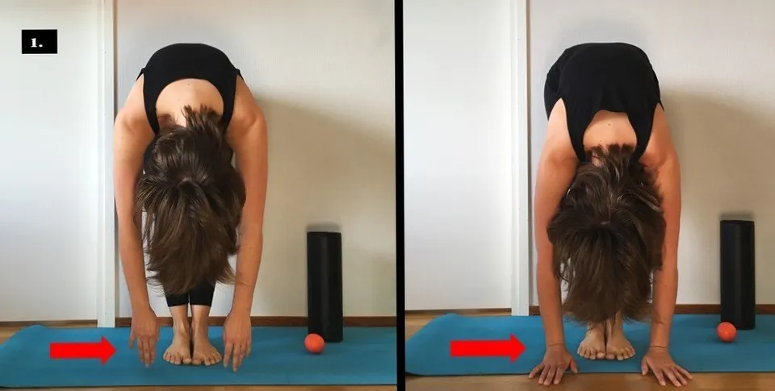
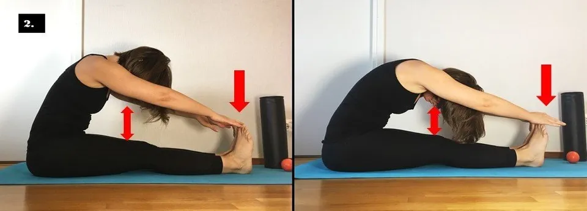
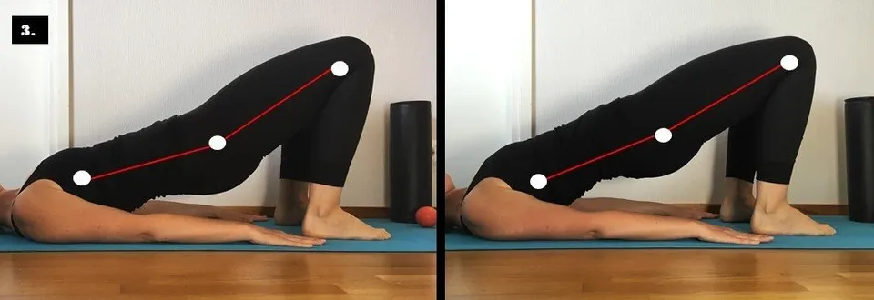
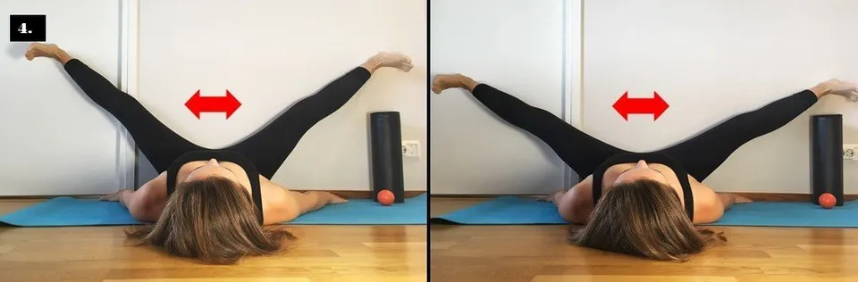

Putkirullaus eli Foam Rolling
Julkaistu alunperin Medisportin blogissa.
Putkirullauksella lisäät lihasten verenkiertoa ja liikkuvuutta, vähennät harjoittelun jälkeistä lihaskipua ja virkistät lihaskalvojen toimintaa.
 Kuva: Sini Kramer
Kuva: Sini Kramer
Putkirullaus on itse toteutettua lihasten hierontaa putkimaisella rullalla. Erilaisia rullausvälineitä on nykyisin tarjolla useita erilaisia kovuudeltaan, kooltaan ja muodoiltaan. Rullauksen tavoite määrittää sen, minkälaista välinettä on hyvä käyttää. Halkaisijaltaan suuremmalla ja materiaaliltaan pehmeämmällä rullalla käsittely on miellyttävää. Tällaista rullaa voit käyttää säännöllisesti osana kehonhuoltoa tai alkulämmittelyä. Pienemmän ja materiaaliltaan kovemman rullan vaikutus ulottuu puolestaan syvemmälle kudoksiin, minkä takia tällaisella välineellä lihasten käsittelyä kannattaa tehdä harvemmin.
Putkirullaus parantaa hetkellisesti liikkuvuutta ja vilkastaa verenkiertoa. Putkirullaus vähentää myös harjoittelun jälkeistä lihaskipua ja vapauttaa lihaskalvojen toimintaa. Positiivisten vaikutusten takia putkirullaus onkin suositeltavaa ottaa mukaan osaksi alkulämmittely- ja kehonhuoltorutiineja.
Testasin, miten 10 minuutin putkirullaus näkyy kehon liikkuvuudessa. Testirullaus tapahtui täysin kivuttomasti ilman ähinää, puhinaa tai kivunirvistyksiä. Tulokset saavutettiin pelkällä rullauksella, yhtäkään venytystä ei testitilanteessa tehty. Lopputuloksena oli energisen ja vapaan tuntuinen keho! Vertaa kuvia ja kokeile itse! Välineinä tarvitset putkirullan (jämäpala viemäriputkea käy mainiosti hieman pehmustettuna) ja hierontapallon (mikä tahansa kovahko pallo käy, kuten tennis- tai pesäpallo).
1. PALLON PYÖRITTELY JALKAPOHJIEN ALLA:
Toimi näin: Pyörittele palloa molempien jalkapohjien alla 30 sekunnin ajan. Jalkapohjien hieronta rentouttaa koko takaketjun toimintaa, mikä näkyy eteentaivutuksen helpottumisena.
 Lopputestauksessa eteentaivutus helpottui.
2. TAKAKETJUN RULLAUS:
Toimi näin: Nopeita, kevyitä sivelyitä putkirullalla 10 kertaa, jonka jälkeen voimakkaammalla paineella hitaammin 2 kertaa. Käy läpi pohkeet, takareidet ja pakarat. Alaselälle, rintarangalle ja niskalle sovelletut kevyet rullaukset.
 Lopputestauksessa niskan kiristys helpotti, selkä pyöristyi paremmin ja sormet ylittivät varvaslinjan.
3. ETUKETJUN RULLAUS:
Toimi näin: Nopeita, kevyitä sivelyitä putkirullalla 10 kertaa, jonka jälkeen voimakkaammalla paineella hitaammin 2 kertaa. Käy läpi sääret ja etureidet. Lonkkataitoksen rentoutus rullalla 30 sekuntia: riittää että makoilet rulla lonkan etuosan alla. Muun muassa lantionnostot onnistuvat, kun lantiolla on tilaa liikkua!
 Lopputestauksessa etureisien kiristys hävisi ja lantio nousi helposti ylös. Tällaisella liikkuvuudella lantionnostot onnistuisivat!
4. SISÄREISIEN RULLAUS:
Toimi näin: Nopeita, kevyitä sivelyitä putkirullalla 10 kertaa, jonka jälkeen voimakkaammalla paineella hitaammin 2 kertaa. Käy läpi sisäreidet. Tässä testissä tuntuma lihaksissa muuttui konkreettisimmin! Kameraakin piti siirtää kuvaustilanteessa taaksepäin, jotta jalat saatiin mahtumaan kuvaan mukaan!
 Lopputestauksessa kiristyksen tunne sisäreisissä hävisi kokonaan ja jalat laskeutuivat vapaasti alas. Kameraakin piti siirtää kuvaustilanteessa taaksepäin, jotta jalat saatiin mahtumaan kuvaan mukaan! Tässä testissä tuntuma lihaksissa muuttui konkreettisimmin.
Kokeile itse ja kerro, minkälaisia muutoksia huomasit omassa kehossasi!
Lähteet:
Su et al., 2017. Acute Effects of Foam Rolling, Static Stretching, and Dynamic Stretching During Warm-ups on Muscular Flexibility and Strength in Young Adults. Journal of Sport Rehabilitation 26 (6), 469-477.
Laffaye et al., 2019. Self-Myofascial Release Effect With Foam Rolling on Recovery After High-Intensity Interval Training. Frontiers in Physiology.
Hendricks et al., 2020. Effects of Foam Rolling on Performance and Recovery: A Systematic Review of the Literature to Guide Practitioners on the Use of Foam Rolling. Journal of Bodywork and Movement Therapies 24 (2), 151-174.